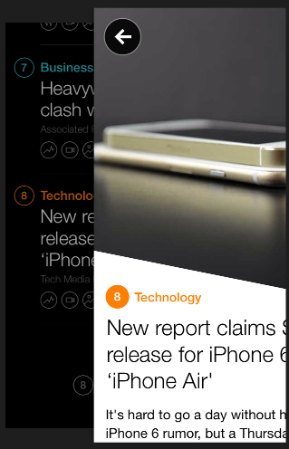

Custom interactions were one of the many things released as part of iOS7 but it was something that remained slightly confusing for me after watching the WWDC session. I found other posts it, which clarified a few things.
Andrew Hershberger wrote a great post that clarified the last point of confusion that I had, namely the relationship between the non-interactive animation and how it became interactive. The key is that you can control both the speed and timeOffset of animations attached to a CALayer, which allows you to scrub forward and backward easily. This seems to be pretty much how the UIPercentDrivenInteractiveTransition works. For a deeper explanation of controlling animations, read what Johan Sørensen wrote about Pausing and controlling the speed of Core Animation.
I decided to implement something akin to the navigation used in both the Artsy app or the Yahoo News Digest app. If you have never used either, you should. Both are beautifully designed.
While both apps have a similar style for the basic navigation, looking closer I see two obvious differences: the placement of the navigation buttons and the scaling of the background view.

First, if you look closely at the Artsy nav, the bottom/back view does not just scale down, it also seems to favor scaling towards the top-center of the screen. We can achieve this by moving the anchorPoint for that layer, which will affect any transformations we add to it.
Second, you may notice that the navigation buttons are not part of the viewControllers within the nav controller, but are part of the actual navigationController.view. So the buttons persist even while viewControllers are pushed or popped.

Yahoo has navigation buttons, but they seem to be attached to the individual view controllers instead of attached to the root view of the navigation controller.
Given these two styles, we'll implement the Artsy version. In fact, here's the code.
The only part that deviates from a normal interaction is that the alpha of the navigation button is connected to the gesture recognizer as well as the animator so that it works properly in either non-interactive or interactive mode. This would be a good contender for refactoring.